本文主要简要介绍一下mybatis框架，并编写第一个入门程序。
课程安排：
mybatis和springmvc通过订单商品 案例驱动
第一天：基础知识（重点，内容量多）
第二天：高级知识
1 对原生态jdbc程序中问题总结
1.1 环境
java环境：jdk1.7.0_72
eclipse：indigo
mysql：5.1
1.2 创建mysql数据
导入下边的脚本：
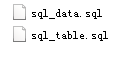
sql_table.sql：记录表结构
sql_data.sql：记录测试数据，在实际企业开发中，最后提供一个初始化数据脚本
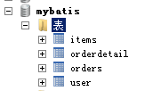
1.3 jdbc程序
使用jdbc查询mysql数据库中用户表的记录。
创建java工程，加入jar包：
数据库驱动包（mysql5.1）
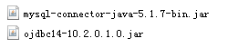
上边的是mysql驱动。
下边的是oracle的驱动。
程序代码：
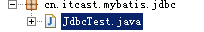
1.4 问题总结
1、数据库连接，使用时就创建，不使用立即释放，对数据库进行频繁连接开启和关闭，造成数据库资源浪费，影响 数据库性能。
设想：使用数据库连接池管理数据库连接。
2、将sql语句硬编码到java代码中，如果sql 语句修改，需要重新编译java代码，不利于系统维护。
设想：将sql语句配置在xml配置文件中，即使sql变化，不需要对java代码进行重新编译。
3、向preparedStatement中设置参数，对占位符号位置和设置参数值，硬编码在java代码中，不利于系统维护。
设想：将sql语句及占位符号和参数全部配置在xml中。
4、从resutSet中遍历结果集数据时，存在硬编码，将获取表的字段进行硬编码，，不利于系统维护。
设想：将查询的结果集，自动映射成java对象。
2 mybatis框架
2.1 mybatis是什么？
mybatis是一个持久层的框架，是apache下的顶级项目。
mybatis托管到googlecode下，再后来托管到github下(https://github.com/mybatis/mybatis-3/releases)。
mybatis让程序将主要精力放在sql上，通过mybatis提供的映射方式，自由灵活生成（半自动化，大部分需要程序员编写sql）满足需要sql语句。
mybatis可以将向 preparedStatement中的输入参数自动进行输入映射，将查询结果集灵活映射成java对象。（输出映射）
2.2 mybatis框架

3 入门程序
3.1 需求
根据用户id（主键）查询用户信息
根据用户名称模糊查询用户信息
添加用户
删除 用户
更新用户
3.2 环境
java环境：jdk1.7.0_72
eclipse：indigo
mysql：5.1
mybatis运行环境（jar包）：
从https://github.com/mybatis/mybatis-3/releases下载，3.2.7版本
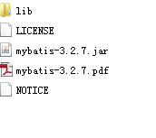
lib下：依赖包
mybatis-3.2.7.jar：核心 包
mybatis-3.2.7.pdf，操作指南
加入mysql的驱动包
3.3 log4j.properties
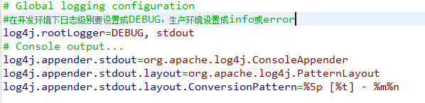
3.4 工程结构
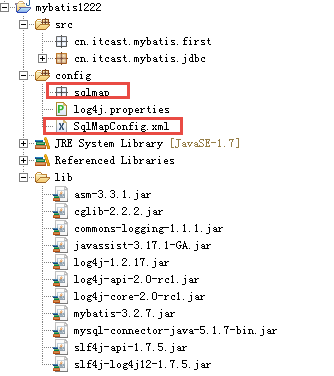
3.5 SqlMapConfig.xml
配置mybatis的运行环境，数据源、事务等。
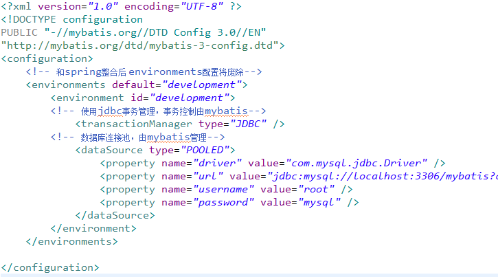
3.6 根据用户id（主键）查询用户信息
3.6.1 创建po类
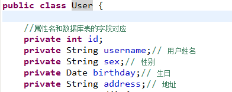
3.6.2 映射文件
映射文件命名：
User.xml（原始ibatis命名），mapper代理开发映射文件名称叫XXXMapper.xml，比如：UserMapper.xml、ItemsMapper.xml
在映射文件中配置sql语句。
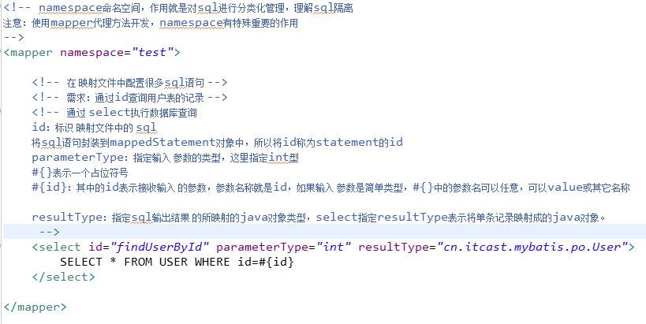
3.6.3 在SqlMapConfig.xml加载映射文件
在sqlMapConfig.xml中加载User.xml:
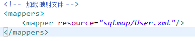
3.6.4 程序编写
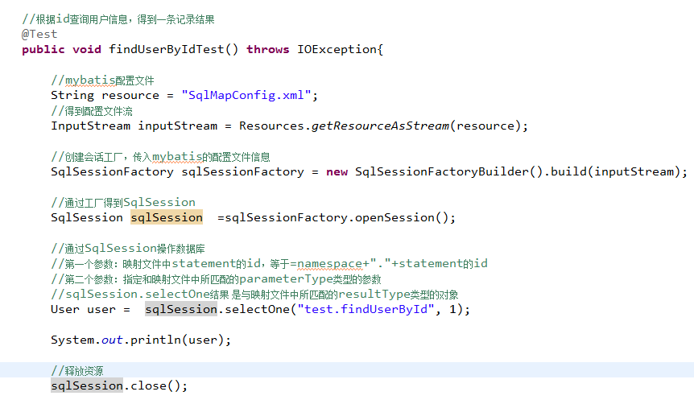
3.7 根据用户名称模糊查询用户信息
3.7.1 映射文件
使用User.xml，添加根据用户名称模糊查询用户信息的sql语句。
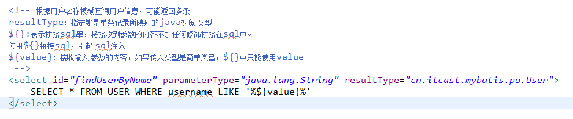
3.7.2 程序代码
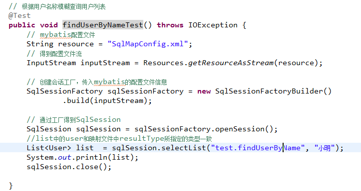
3.8 添加用户
3.8.1 映射文件
在 User.xml中配置添加用户的Statement
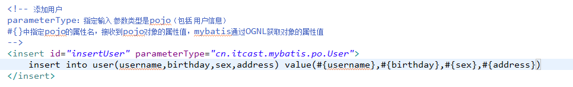
3.8.2 程序代码
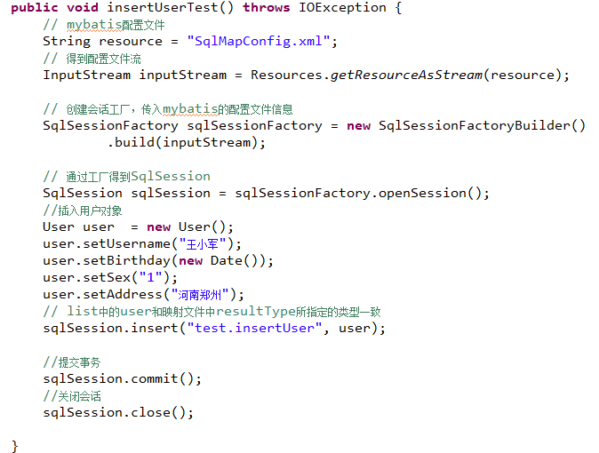
3.8.3 自增主键返回
mysql自增主键，执行insert提交之前自动生成一个自增主键。
通过mysql函数获取到刚插入记录的自增主键：
LAST_INSERT_ID()
是insert之后调用此函数。
修改insertUser定义：
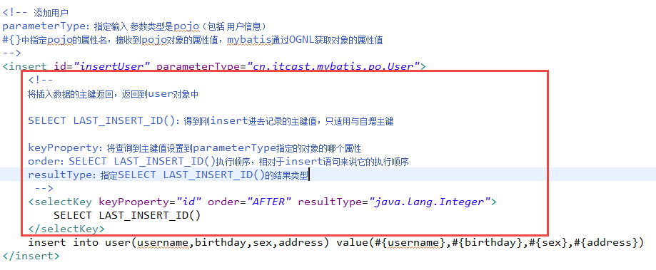
3.8.4 非自增主键返回(使用uuid())
使用mysql的uuid()函数生成主键，需要修改表中id字段类型为string，长度设置成35位。
执行思路：
先通过uuid()查询到主键，将主键输入 到sql语句中。
执行uuid()语句顺序相对于insert语句之前执行。
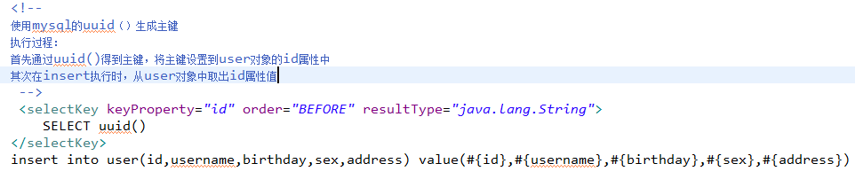
通过oracle的序列生成主键：
|
|
3.9 删除用户
3.9.1 映射文件
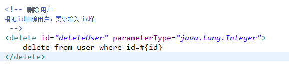
3.9.2 代码：
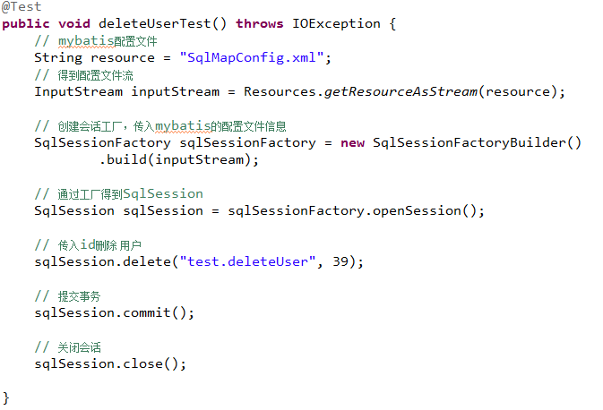
3.10 更新用户
3.10.1 映射文件
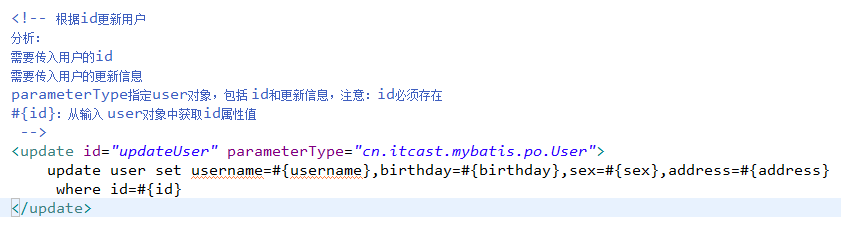
3.10.2 代码
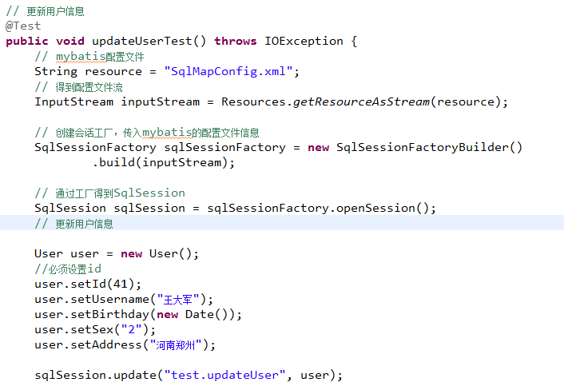
3.11 总结
3.11.1 parameterType
在映射文件中通过parameterType指定输入 参数的类型。
3.11.2 resultType
在映射文件中通过resultType指定输出结果的类型。
3.11.3 #{}和${}
#{}表示一个占位符号，#{}接收输入参数，类型可以是简单类型，pojo、hashmap。
如果接收简单类型，#{}中可以写成value或其它名称。
#{}接收pojo对象值，通过OGNL读取对象中的属性值，通过属性.属性.属性…的方式获取对象属性值。
${}表示一个拼接符号，会引用sql注入，所以不建议使用${}。
${}接收输入参数，类型可以是简单类型，pojo、hashmap。
如果接收简单类型，${}中只能写成value。
${}接收pojo对象值，通过OGNL读取对象中的属性值，通过属性.属性.属性…的方式获取对象属性值。
3.11.4 selectOne和selectList
selectOne表示查询出一条记录进行映射。如果使用selectOne可以实现使用selectList也可以实现（list中只有一个对象）。
selectList表示查询出一个列表（多条记录）进行映射。如果使用selectList查询多条记录，不能使用selectOne。
如果使用selectOne报错：
3.12 mybatis和hibernate本质区别和应用场景
hibernate：是一个标准ORM框架（对象关系映射）。入门门槛较高的，不需要程序写sql，sql语句自动生成了。
对sql语句进行优化、修改比较困难的。
应用场景：
适用与需求变化不多的中小型项目，比如：后台管理系统，erp、orm、oa。。
mybatis：专注是sql本身，需要程序员自己编写sql语句，sql修改、优化比较方便。mybatis是一个不完全 的ORM框架，虽然程序员自己写sql，mybatis 也可以实现映射（输入映射、输出映射）。
应用场景：
适用与需求变化较多的项目，比如：互联网项目。
企业进行技术选型，以低成本 高回报作为技术选型的原则，根据项目组的技术力量进行选择。